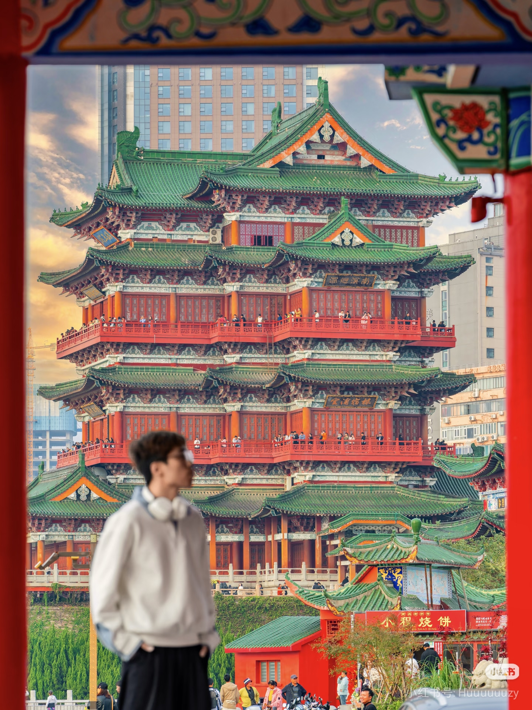

一城赣韵，读懂南昌
2200+
千年豫章古城
11项
国家级非遗瑰宝
八一
红色革命英雄城
10+
4A/5A文旅景区
千年文脉 · 四大文化篇章


指尖非遗，赣地匠心


古今地标风光
古迹名胜
现代新城

滕王阁

绳金塔

万寿宫

海昏侯遗址


赣味人间，南昌烟火

南昌拌粉

瓦罐汤

藜蒿炒腊肉

白糖糕

糊羹
南昌游玩精选路线
一日古风线
滕王阁 + 万寿宫 + 绳金塔，感受千年古豫章韵味
两日红色研学线
八一起义纪念馆、海昏侯国遗址，红色历史研学
美食休闲线
蛤蟆街小吃、艾溪湖日落夜景，休闲放松打卡
镜头下的南昌 · 游客投稿
